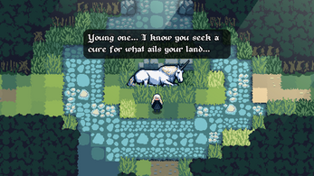
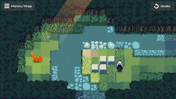
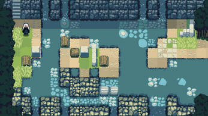

Explore an ancient forest, push blocks to solve puzzles, and search for a way to end the curse on your land.
Originally created for the KB Games Zeldajam '22 game jam. Built with Godot.
Keyboard controls
- WASD / Arrow keys - Move & Push
- R - Undo
- ENTER - Interact / Advance text
- M or ESC - Map/Menu
Mouse / Touch controls
- Swipe up/down/left/right - Move & Push
- Onscreen buttons for Map/Menu and Reset.
- Tap on dialog boxes to advance text.
Note: You can reset the level if needed by opening up the menu and selecting "Restart Level"
Changelog
- v1.2.5 - Fixed save and load issue.
- v1.2.4 - Fixed a crash bug related to hiding the touch controls.
- v1.2.3 - Fixed a few areas with tile mismatches on map edges...
- v1.2.2 - Fixed a potential soft-lock.


